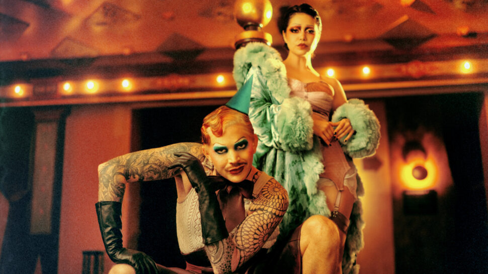

Adam Lambert e Auli'i Cravalho farão suas estreias na Broadway no musical Cabaret

A dupla traz novas perspectivas para os icônicos papéis de Emcee e Sally Bowles, prometendo uma temporada inesquecível no Kit Kat Club.
Adam Lambert e Auli'i Cravalho se preparam para estrear na Broadway, assumindo os papéis de Emcee e Sally Bowles, respectivamente, na aclamada remontagem de "Cabaret". As apresentações começam em 16 de setembro e seguem até 30 de março de 2025. Eddie Redmayne e Gayle Rankin farão suas últimas apresentações nos papéis em 14 de setembro, com substitutos atuando em algumas sessões de julho e agosto.
Adam Lambert, indicado ao Grammy e conhecido por sua participação no American Idol, onde foi finalista na oitava temporada, possui três álbuns de estúdio e é famoso por hits como "Whataya Want from Me". Auli'i Cravalho, que ganhou destaque como a voz da personagem principal no filme animado da Disney "Moana" e reprisará o papel em "Moana 2" a ser lançado em novembro, recentemente atuou como Janice na adaptação cinematográfica do musical "Mean Girls".
Atualmente em cartaz na Broadway, após uma bem-sucedida temporada no West End de Londres, a produção de "Cabaret" dirigida por Rebecca Frecknall estreou em 21 de abril. O espetáculo foi indicado a nove prêmios Tony em 2024, incluindo Melhor Revival de um Musical, e venceu na categoria de Melhor Cenografia para Tom Scutt.
Adam Lambert compartilhou sua empolgação: "Cresci no palco do teatro musical e sempre foi um sonho de infância me apresentar na Broadway. Com esta produção de Cabaret, finalmente senti que era o momento certo para fazer minha estreia. Os temas deste show sempre ressoaram comigo e, dado o clima sociopolítico atual, parecem assustadoramente oportunos. Estou ansioso para trabalhar com Auli’i e criar nossa própria mágica."
Auli'i Cravalho também expressou sua alegria: "Estou emocionada por me juntar à longa linha de talentosas mulheres que interpretaram a icônica 'Sally Bowles'. Juntar-me a um espetáculo com tanta história e uma equipe tão incrível é uma honra."
O elenco atual de "Cabaret" também conta com Bebe Neuwirth como Fraulein Schneider, Ato Blankson-Wood como Clifford Bradshaw, Steven Skybell como Herr Schultz, Henry Gottfried como Ernst Ludwig e Natascia Diaz como Fraulein Kost e Fritzie. Outros membros do elenco incluem Marty Lauter (conhecida como Marcia Marcia Marcia de RuPaul's Drag Race), Gabi Campo, Ayla Ciccone-Burton, Colin Cunliffe, Loren Lester, David Merino, Julian Ramos, MiMi Scardulla e Paige Smallwood.
A diretora Rebecca Frecknall comentou: "Estou muito animada que Adam e Auli’i se juntem à nossa companhia de Cabaret neste outono. Ambos trazem muito talento, tenacidade e inteligência para seus trabalhos, e sei que eles trarão novas e emocionantes contribuições ao Kit Kat Club."
Com base nos trabalhos de Christopher Isherwood e John Van Druten, "Cabaret" é ambientado na Berlim da era de Weimar e explora a complexa relação entre a artista inglesa Sally Bowles e o escritor americano Clifford Bradshaw, enquanto o regime nazista ascende ao poder. A produção atual manteve grande parte da equipe criativa da temporada no West End, incluindo a coreógrafa Julia Cheng, o designer de cenários e figurinos Tom Scutt e a diretora musical Jennifer Whyte.